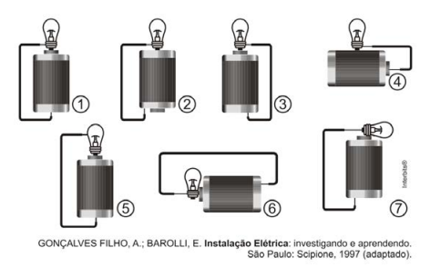

🔹 Ir para Problema 76 | 🔹 Ir para Problema 78
114. (ENEM)
Um curioso estudante, empolgado com a aula de circuito elétrico que assistiu na escola, resolve desmontar sua lanterna. Utilizando a lâmpada e a pilha retiradas do equipamento, e um fio com as extremidades descascadas, faz as ligações mostradas em oito esquemas numerados (1) a (8). Deseja-se saber em quais casos a lâmpada acende. As opções são:

1) Para a lâmpada incandescente acender, um terminal da pilha deve tocar: e o outro terminal deve tocar:
2) Verificando os esquemas, a lâmpada acende nos casos:
Assinale a alternativa correta: